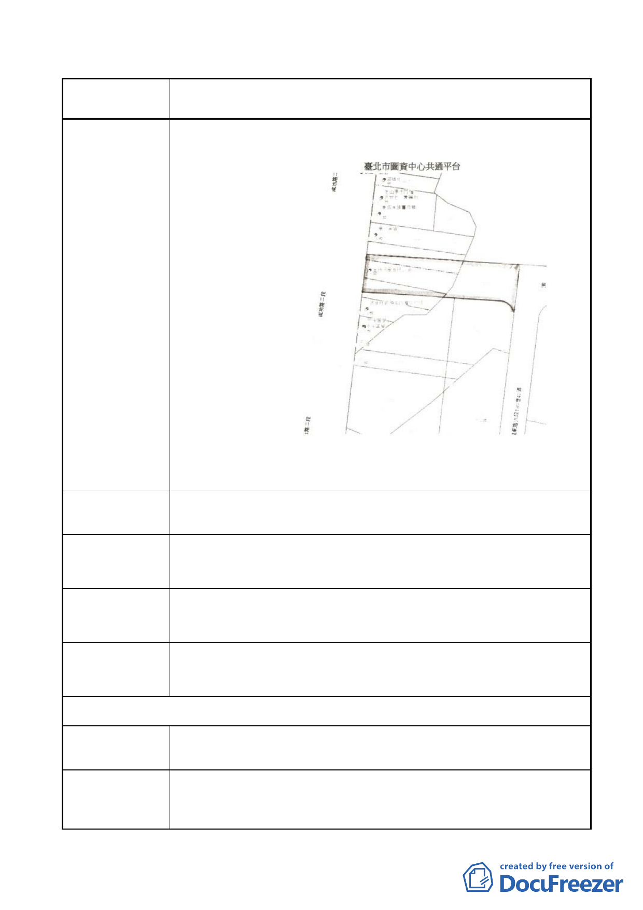

案名
變更臺北市內湖區石潭段四小段 280、281、281-1 地號等三筆
土地國中、國小用地為體育場用地及道路用地主要計畫案
建議案（四）內湖區石潭段三小段 591.592.594.597.地號
陳情地點 4
改善體育場用地週邊交通
陳情理由
建議辦法
為免網球中心正式運轉後，造成本里交通擁塞，請打通民權路
6 段 180 巷 42 弄通往成功路 2 段之道路用地，以改善交通。
市府回應說明 本地點距基地較遠，已有一段距離，故不建議與本案併同考量。
委員會
決議
同編號 1 陳情意見委員會決議。
署期 101.8.21. 第 2 次陳情
陳情地點
陳情理由及建
議辦法
1.網球中心交通動線部份
（1）基地北側緊臨民權東路 6 段，請退縮一車道，供大客車及
公車接駁停靠，禁止大客車及公車進入社區巷弄；比賽期
- 29 -